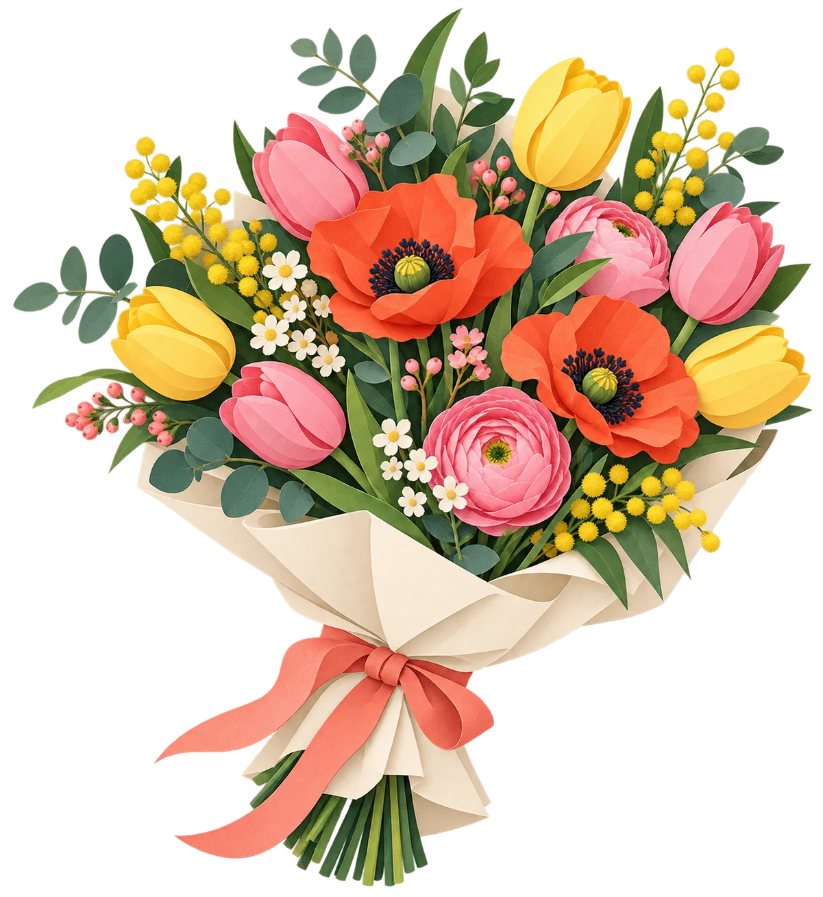
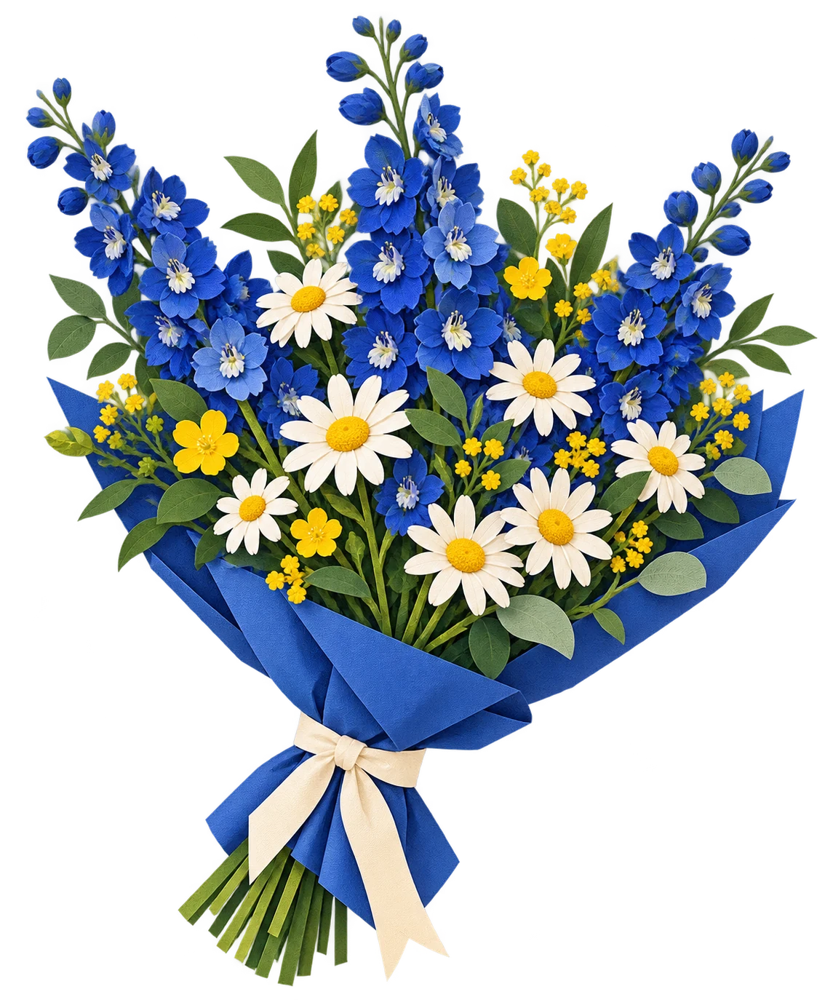

ДЛЯ ТЁПЛЫХ СЛОВ
01 / ЯРКИЙ
Тёплый привет
Мак, тюльпаны, немного солнца и зелени. Для радости без расписания.
от 2 200 ₽
S / M / L · ОТКРЫТКА С ВАШИМИ СЛОВАМИ

Для «спасибо», «скучаю» и просто хорошего вторника. Подберём цветы, которые скажут это за вас.
Подобрать букетВыберите повод и комфортную стоимость — покажем букет, с которого можно начать.
Лёгкий букет для дня, которому хочется добавить цвета.
Две палитры. Три размера. Ваши слова в открытке. Выберите настроение — и соберите свой вариант.
Мак, тюльпаны, немного солнца и зелени. Для радости без расписания.

Дельфиниум, ромашки и светлые акценты. Когда хочется сказать больше.
Букеты и цены приведены для демонстрации концепции. Реальный заказ на сайте не создаётся.
Выберите удобный способ: получить букет у двери или забрать его по дороге. Открытку добавьте при выборе размера.
Повод, настроение и любимый букет. Можно начать с короткого подбора выше.
Подбираем свежие цветы и оформляем композицию вручную.
Ваша открытка остаётся вместе с выбранным букетом. Доставка или самовывоз — в сохранённом подборе.
Не только к праздникам. Представьте, что каждые две недели дома ждёт новая сезонная композиция.
Свадьба, ужин с близкими или праздник дома — цветы помогают собрать атмосферу. В реальной студии такой проект обсуждают лично.